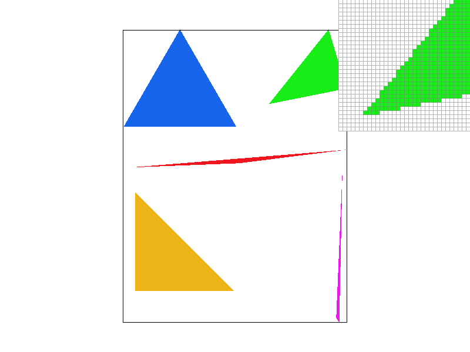
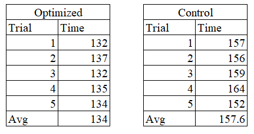
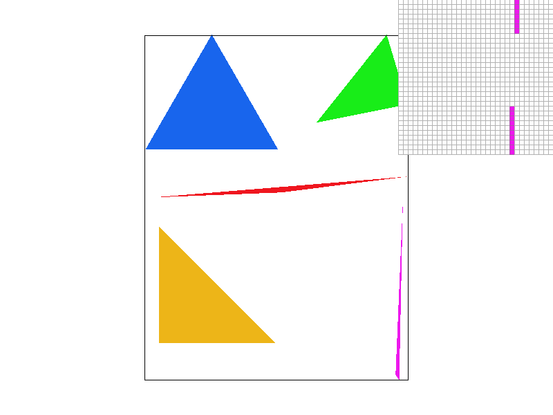
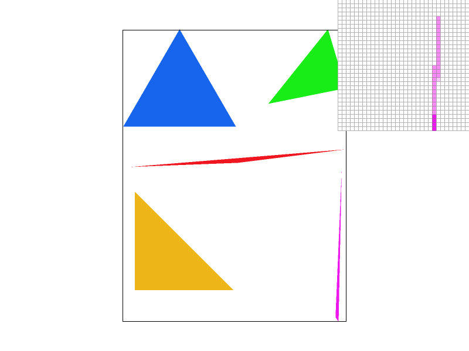
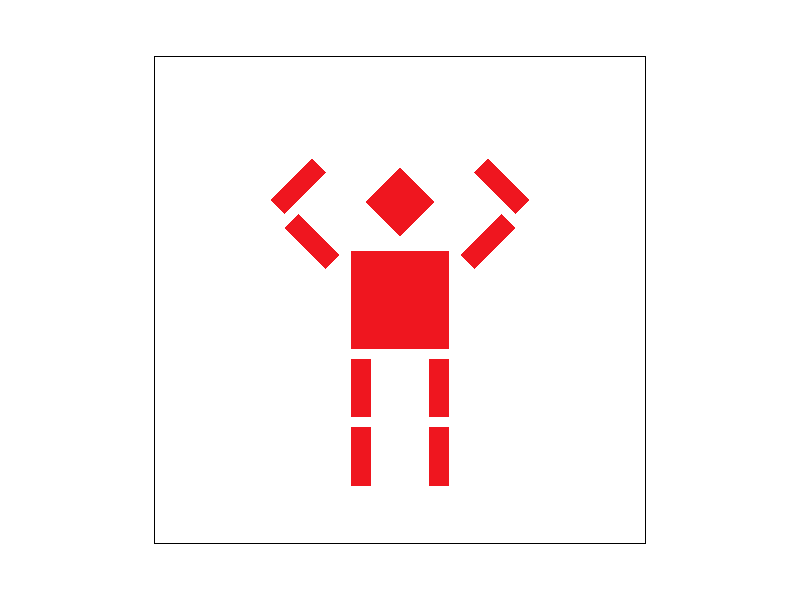
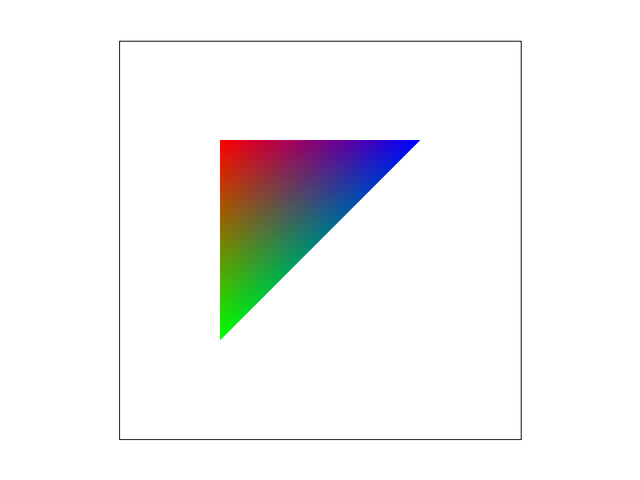
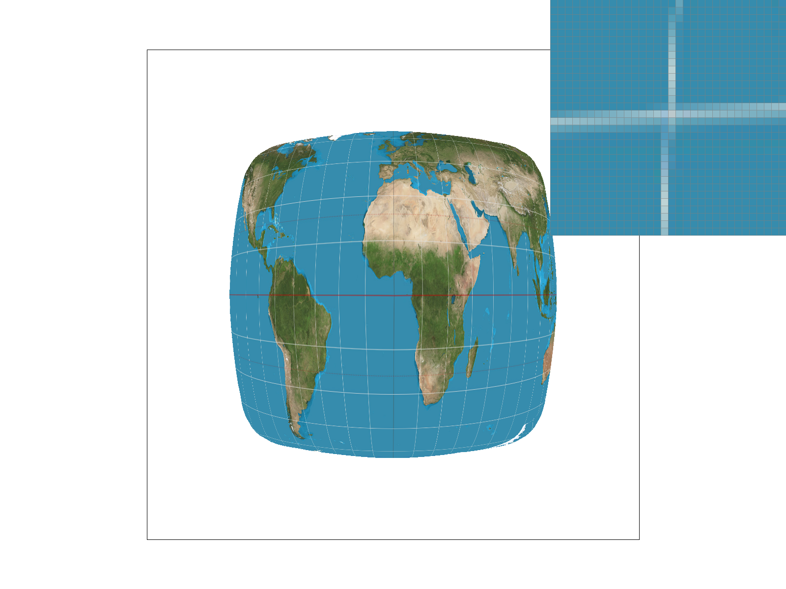
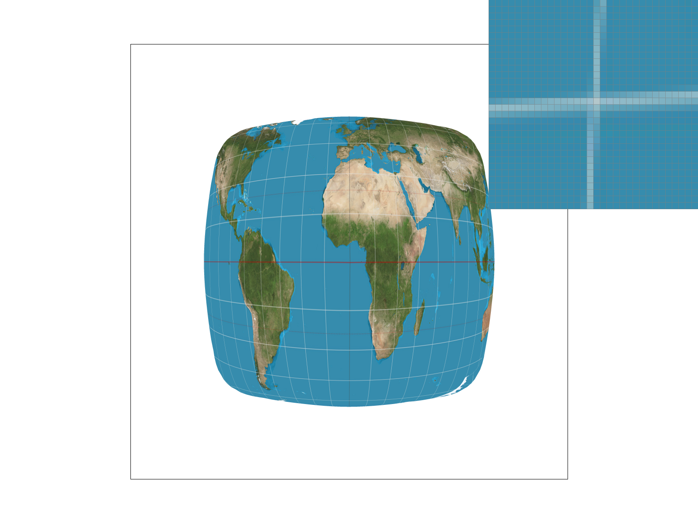
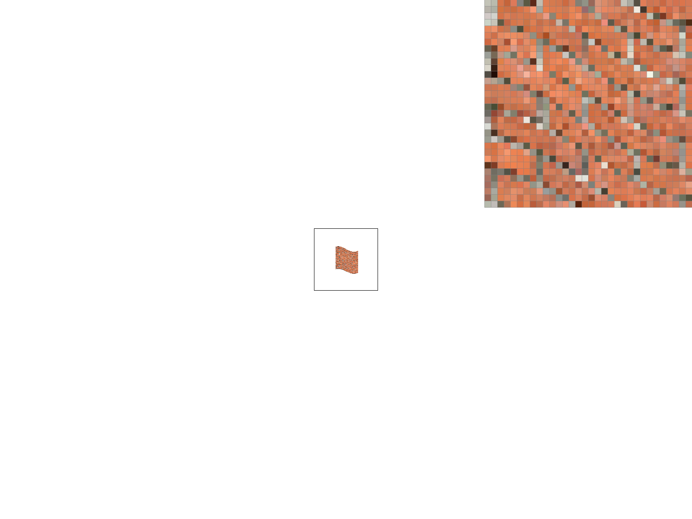
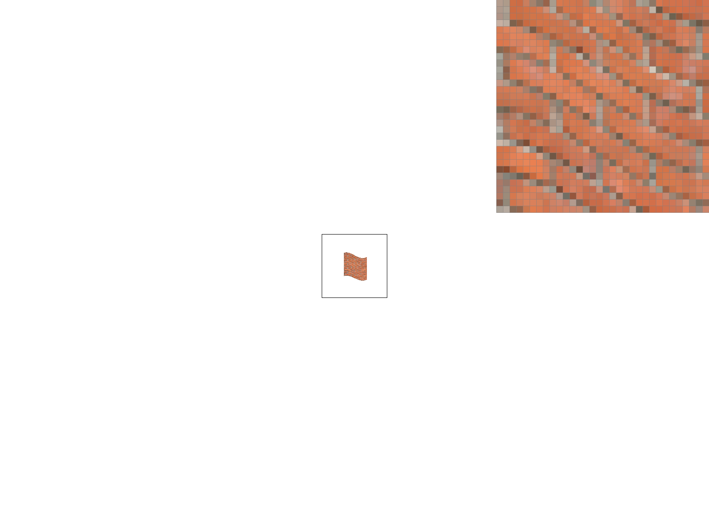

CS184 Project 1
Matthew Tang, Kaitlyn Lee
Task 1
Task 1 involved rasterizing triangles. We are given 3 vertex coordinates and a color to rasterize the triangle. We can do so by checking if a pixel is within the triangle, and if it is then we can fill it with that color. As shown in lecture, the way to determine if a pixel falls within the interior of the triangle is to do form a line equation. We select 2 vertex points to form the line equation and plug in the target point. One slight problem is that the sign of the result means different things depending on the order of the vertex points. A simple solution is to compute the same line test for the third unused triangle vertex point. If the target point and third vertex point yield answers of the same sign, then the target point falls within the triangle (since we know the third vertex point must be on the correct side).
Another thing to consider is efficiency of this method. Our original method finds the maximum and minimum x and y coords which serves as a bounding box any point the triangle could contain. Then we can just check every single coordinate in that bounding box.

[EXTRA CREDIT] The original method of rendering triangles is inefficient. We needlessly search every single pixel in the bounding box. Since a triangle is a convex shape, meaning all of the pixels in a row that represent the interior of a triangle are contiguous. This means that once we leave the interior, the rest of the pixels in that row must be in the exterior. We can keep track of this using a boolean that is set to true if we enter the interior and once we leave the interior, we can break out of the loop. We ran time trials of the dragon SVG file (test3.svg). The changes resulted in approximately a 15% speedup.

Task 2
In Task 2, we aim to solve the aliasing problem with supersampling. Supersampling samples multiple positions within a pixel and then averages them together, reducing the prevalence of jaggies.
We had to modify our sample buffer to fit the number of pixels of the images times the supersampling rate. All sample buffer array accesses also had to be updated. For our rasterize triangle method, we added 2 more for loops since we need to sample an arbitrary number of times within the pixel in both the x and y direction. We made sure to update the fill_pixel method to make sure the correct element in the buffer was updated. This method visibly reduced aliasing quite effectively as shown below.



Left: 1, Middle: 9, Right: 16
In the left, we can see without supersampling that the triangle is literally disconnected since it is too skinny and the edge would be too small (sub-pixel, too high frequency). When we supersample, we can sample multiple positions within that pixel. This creates lighter colored pixels since they are averages of supersamples that contain nothing and some that are of that triangle's color. In the right image, the triangle is fully connected and looks much better.
Task 3
In Task 3 we implement transforms. This allows us to render a robot, where we apply transforms to body parts. In my modified robot, I added two extra rotations for each arm segment. This allowed the arm segments to bend so the robot is putting its arms up. I also had to adjust the translate transforms accordingly so the spacing looked correct. The svg file can also be found at proj1/docs/my_robot.svg

Task 4
Barycentric coordinates can be used to interpolate color values in triangles. We can notice that any position within a triangle is a linear combination of the 3 vertices. We can assign coefficients alpha beta gamma to each vertex to indicate how much that vertex is contributing to get our target location. In this case, the coefficients represent how much of each vertex color should be used, creating a smooth color interpolation.
In the image below, a triangle with vertices of color red green and blue are shown. Barycentric coordinates create the color interpolation, as points within the image are linear combinations of red green and blue (the vertices).

This is an interpolated image of a circle of colors.

Task 5
Pixel sampling is the act of sampling a color value from a discretized texture image at a given position in the continuous domain.
For example, we might want to sample the color at position (1.5, 1.5), but this value isn't clearly defined since pixel positions are whole numbers.
There are various sampling methods to define how we should evaluate this.
We use pixel sampling to perform texture mapping.
Given a triangle in the result image and the corresponding triangle in the texture image, we used Barycentric coordinates to sample the texture image at the location corresponding to a location in the resulting image.
Nearest pixel sampling samples the texture image at the pixel with a center closest to the sample location. This method is very straightforward, but can lead to very blocky results.
Bilinear pixel linearly interpolates the value at the given position from the values of the 4 pixels closest to the sample location. This method requires a bit more computation, but can help with antialiasing when compared to nearest neighbor sampling.
When Biliear Sampling is Better
Nearest sampling with n = 1 samples per pixel.
Nearest sampling with n = 16 samples per pixel.
Bilinear sampling with n = 1 samples per pixel.

Bilinear sampling with n = 16 samples per pixel.

In general, using bilinear sampling over nearest sampling, or increasing the sampling rate seemed to reduce aliasing.
Although the white line is continuous at full resolution, you can see that with nearest sampling and 1 sample per pixel, there are very obvious discontinuities in the line that can be seen from the full image.
This is somewhat remedied by using bilinear sampling with 1 sample per pixel, but you can still see slight changes in line color. Nearest sampling with 16 samples per pixel reduces the issue even further, and bilinear sampling with 16 samples per pixel produces the smoothest image.
There will be a large difference between the two methods of sampling when there are high frequency changes in the image relative to the resolution (such as when you are very zoomed out and looking at changes in a very thin line).
This is because at a low resolution, we are sampling relatively few times with respect to the size of the texture image.
Bilinear sampling helps reduce aliasing in this case by averaging out the values of our samples with those of its surrounding, essentially lowering the frequency.
Task 6
Level sampling is that act of sampling from different levels of the mipmap, a data structure that stores smaller versions of the original texture image that have had the higher frequencies filtered out. Each level in the mipmap is 1/4 the size of the previous layer (halve both dimensions), and also filters out high frequencies. When our target image is lower resolution, we sample from in order to reduce aliasing.
Based on the resolution of the image to display, we calculate the mip map level we should be sampling at (that is, the level of the mipmap where the texture image has the closest change in frequency to the target image.)
There were two appoaches to deciding what mip map level to sample from; the nearest level approach simply sampled at the level nearest to the level calculated (which was a float).
The bilinear interpolation level approach sampled the mip map at the two levels above and below the level calculated, and then linearly interpolated between the values to return a final value.
Tradeoffs
-
Pixel Sampling
-
Nearest Sampling
This method is faster than bilinear sampling since there is less computation, but is more prone to aliasing.
-
Bilinear Sampling
This method is slower than nearest sampling, but has more antialiasing power.
-
Level Sampling
-
Nearest Sampling
This method is faster than bilinear level sampling since we only sample once, but is more prone to aliasing, especially when the mip map level is not a good match for the image resolution.
-
Bilinear Sampling
This method is slower than nearest level sampling, but is less prone to aliasing.
Level sampling in general requires more memory, because we need to store the mip map of the image (essentially using twice the memory) of not using level sampling.
However, utilizing level sampling has great antialiasing power because we are able to sample the texture image at a rate similar to that of the target image, reducing aliasing.
-
Number of Samples per pixel
Increasing the number of samples per pixel is essentially increasing our sampling frequency, so it has great antialiasing power.
However, it takes up much more memory since we have to store all our samples before we resolve to the framebuffer. Increasing the number of samples per pixel also greatly slows down our code since we have to sample more times and do much more computation to average out the sample values.
Testing on Our Own Images
L_ZERO and P_NEAREST

L_ZERO and P_BILINEAR
L_NEAREST and P_NEAREST
L_NEAREST and P_BILINEAR

As you can see, both the images using L_ZERO have obvious aliasing; you cannot clearly see the rows of bricks, and from far away looks like a random mishmash of pixels.
This is clearly improved by using L_NEAREST-- you can more clearly see the rows of bricks. Using P_BILINEAR over P_NEAREST helps reduce aliasing even further; the rows look much more blended when using P_BILINEAR.